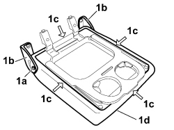

7050D57 TRIM OF REAR SEAT ARM REST RR WITH ARM REST REMOVED
- Path
- Procedures > 70 FITTINGS > 7050 REAR SEATS > 7050D REAR SEAT TRIM/PADDING > 7050D57 TRIM OF REAR SEAT ARM REST RR WITH ARM REST REMOVED
- Kind
- repair procedure (removal / refitting; the operation number is the code)
- Applies to
- all engines; all production periods
- Interactive page
- https://sloeber94.github.io/elrnDB-fCrm/en/#/194001169
Applies to: all engines; all production periods
 Removing
Removing
 Refitting
RefittingOp. 7050B21 REAR SEAT ARM REST GLOVE BOX COVER- R R
Op. 7050D56 REAR SEAT ARM REST GLOVE BOX COVER COATING - R R WITH ARM REST TAKEN OFF
1. Undo the fixing bolts (1a), remove the brackets (1b), release the profiles (1c) on the sides of the cover (1d) and lastly remove the cover for the armrest from the rear seat.

Applies to: all engines; all production periods
Refitting
Removing- Check that the trim is not damaged.
- Position the profiles on the armrest and fit the cover in its housing.
- Position the brackets in the housing and tighten the fixing bolts.
Op. 7050D56 REAR SEAT ARM REST GLOVE BOX COVER COATING - R R WITH ARM REST TAKEN OFF